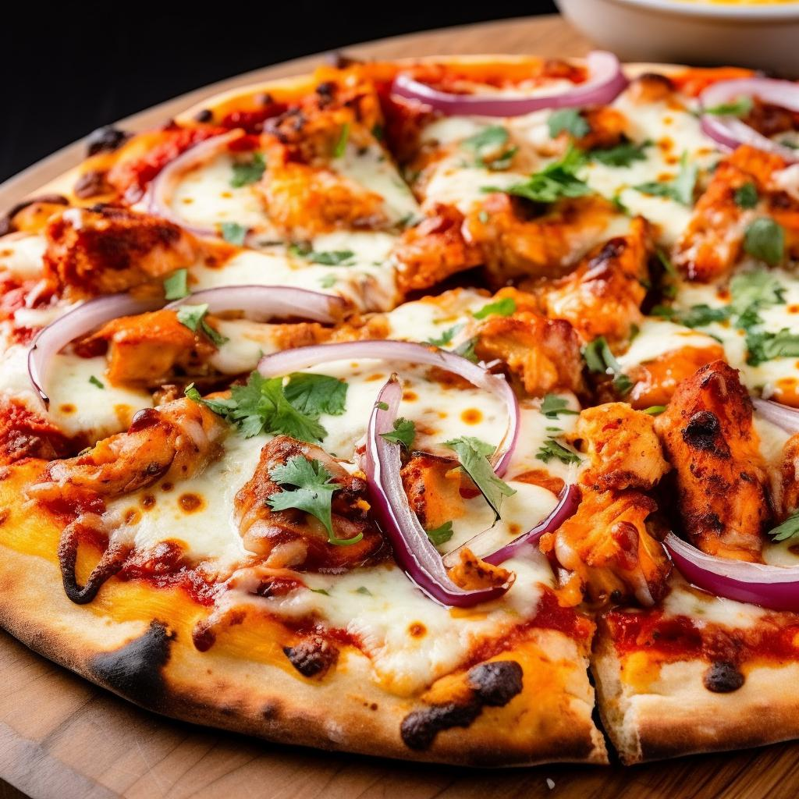

Pizza Tandoori
Cookie
Cheeseburger

Ingredienten
- 1 bol pizza deeg
- 1 kopje boter kip saus
- 300 gram kipfilet
- 1 kopje mozzarella kaas
- 1 rode ui
- 1/4 kop verse koriander
- 4 citroenpartjes
Bereiding
- Breng het deeg op kamertemperatuur. Kneed tot zacht en laat 1 uur rijzen. Voeg kruiden zoals knoflookpoeder of oregano toe voor extra smaak.
- Meng kip met yoghurt, kruiden en zout. Laat minstens 1 uur in de koelkast marineren.
- Verwarm de oven tot 260°C. Laat de pizzasteen 30 min opwarmen.
- Rol het deeg uit. Beleg met boterkipsaus, gemarineerde kip, ui en mozzarella.
- Bak 10-12 min in de oven tot goudbruin.
- Garneer met koriander en citroensap.